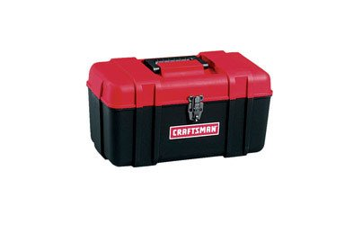
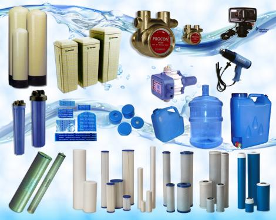
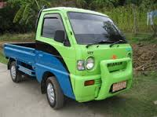

Available Services
  
Assistance of the Franchise Officer
A Franchise officer will be assigned to coordinate and attend to every need of a Franchising.The franchise officer will serve as the franchisor's liason or representative,therefore,any concern arising from the franchisee's daily operation has to be coursed through or coordinated with them.
Engineering Design and Construction Management
An official design and layout of all BonAqua Store will be provided by this department for strict compliance,However, in some instances where materials required are not available,revision is being allowed with a formal approval from the franchiser.It is understood that the Franchisee is responsible for the construction of the station.
TECHNICAL SERVICES
On call technical service will be available in cases of equipment breakdown or moods for service maintenance.
Water treatment equipment intallation
Upgrading of water treatment equipment
Set up equipment modification
Hot and cold water dispenser repair and maintenance
Multimedia filter and water sofiener repair and maintenance
General water refilling equipment check-up
Filter cleaning
Disinfection cleaning of water tank
Disinfection of water equipment system